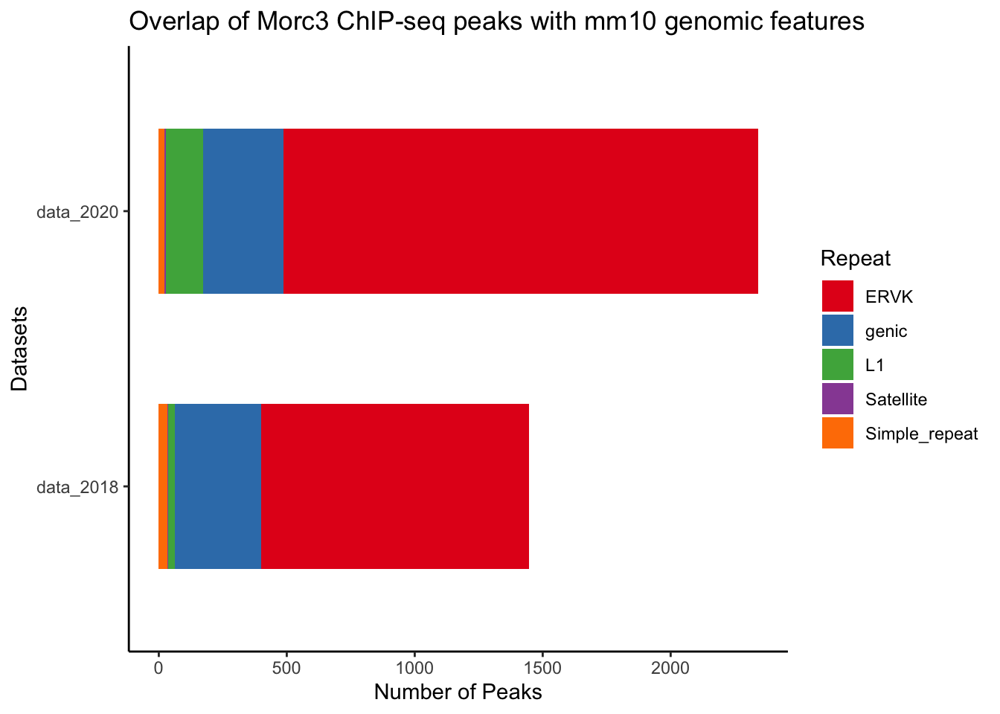
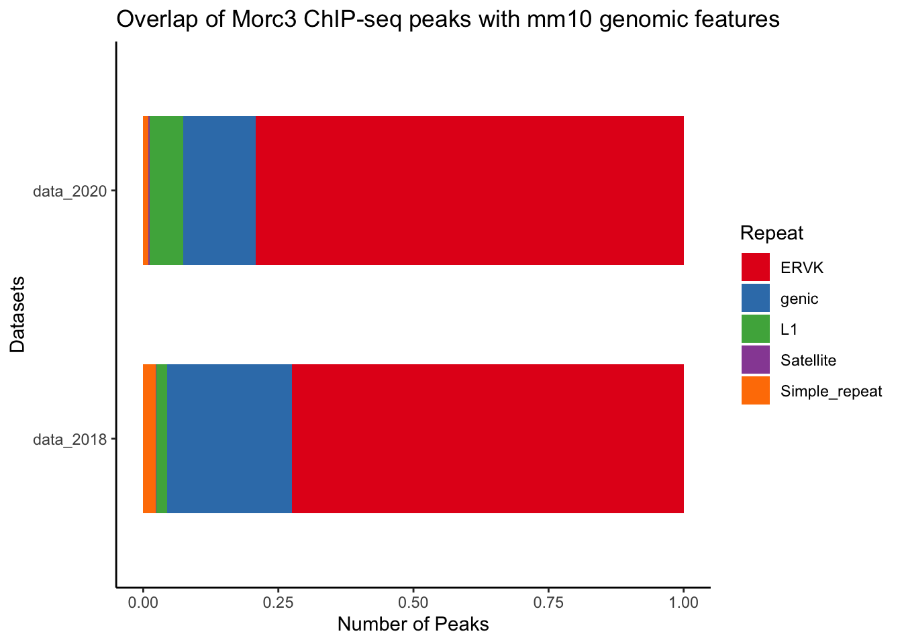

Last updated: 2020-11-18
Checks: 7 0
Knit directory: Annotation_Morc3_Jacobsen_ChIPseq/
This reproducible R Markdown analysis was created with workflowr (version 1.6.2). The Checks tab describes the reproducibility checks that were applied when the results were created. The Past versions tab lists the development history.
Great! Since the R Markdown file has been committed to the Git repository, you know the exact version of the code that produced these results.
Great job! The global environment was empty. Objects defined in the global environment can affect the analysis in your R Markdown file in unknown ways. For reproduciblity it’s best to always run the code in an empty environment.
The command set.seed(20201117) was run prior to running the code in the R Markdown file. Setting a seed ensures that any results that rely on randomness, e.g. subsampling or permutations, are reproducible.
Great job! Recording the operating system, R version, and package versions is critical for reproducibility.
Nice! There were no cached chunks for this analysis, so you can be confident that you successfully produced the results during this run.
Great job! Using relative paths to the files within your workflowr project makes it easier to run your code on other machines.
Great! You are using Git for version control. Tracking code development and connecting the code version to the results is critical for reproducibility.
The results in this page were generated with repository version 25327db. See the Past versions tab to see a history of the changes made to the R Markdown and HTML files.
Note that you need to be careful to ensure that all relevant files for the analysis have been committed to Git prior to generating the results (you can use wflow_publish or wflow_git_commit). workflowr only checks the R Markdown file, but you know if there are other scripts or data files that it depends on. Below is the status of the Git repository when the results were generated:
Ignored files:
Ignored: .DS_Store
Ignored: .Rhistory
Ignored: Annotation_Morc3_Jacobsen_ChIPseq/.DS_Store
Ignored: docs/.DS_Store
Ignored: docs/figure/.DS_Store
Untracked files:
Untracked: Annotation_Morc3_Jacobsen_ChIPseq/.Rprofile
Untracked: Annotation_Morc3_Jacobsen_ChIPseq/.gitattributes
Untracked: Annotation_Morc3_Jacobsen_ChIPseq/.gitignore
Untracked: Annotation_Morc3_Jacobsen_ChIPseq/Annotation_Morc3_Jacobsen_ChIPseq.Rproj
Untracked: Annotation_Morc3_Jacobsen_ChIPseq/README.md
Untracked: Annotation_Morc3_Jacobsen_ChIPseq/_workflowr.yml
Untracked: Annotation_Morc3_Jacobsen_ChIPseq/analysis/
Untracked: Annotation_Morc3_Jacobsen_ChIPseq/code/
Untracked: Annotation_Morc3_Jacobsen_ChIPseq/data/README.md
Untracked: Annotation_Morc3_Jacobsen_ChIPseq/data/WTMORC3_Jacobsen_peaks.sorted.annotated.bed.txt
Untracked: Annotation_Morc3_Jacobsen_ChIPseq/data/WTMORC3_Jacobsen_peaks.sorted.annotated.bed.xlsx
Untracked: Annotation_Morc3_Jacobsen_ChIPseq/data/~$BioRXiv_Morc3.xlsx
Untracked: Annotation_Morc3_Jacobsen_ChIPseq/data/~$WTMORC3_Jacobsen_peaks.sorted.annotated.bed.xlsx
Untracked: data/WTMORC3_Jacobsen_peaks.sorted.annotated.bed
Untracked: data/~$RNA_genes.xlsx
Unstaged changes:
Modified: output/Volcano_plot_Morc3_bioRxiv_RNAseq_TE.pdf
Modified: output/Volcano_plot_Morc3_bioRxiv_RNAseq_genes.pdf
Note that any generated files, e.g. HTML, png, CSS, etc., are not included in this status report because it is ok for generated content to have uncommitted changes.
These are the previous versions of the repository in which changes were made to the R Markdown (Annotation_Morc3_Jacobsen_ChIPseq/analysis/Annotation_Morc3_Jacobsen_ChIPseq.Rmd) and HTML (Annotation_Morc3_Jacobsen_ChIPseq/docs/Annotation_Morc3_Jacobsen_ChIPseq.html) files. If you’ve configured a remote Git repository (see ?wflow_git_remote), click on the hyperlinks in the table below to view the files as they were in that past version.
| File | Version | Author | Date | Message |
|---|---|---|---|---|
| html | cceef78 | JihedC | 2020-11-18 | Build site. |
The goal is to annotate the Morc3 ChIP-seq performed by Jacobsen. Peaks were called based on the provided bigwig files for IP and input.
df <- read_excel("data/WTMORC3_Jacobsen_peaks.sorted.annotated.bed.xlsx")
head(df)# A tibble: 6 x 19
PeakID Chr Start End Strand Peak_Score Focus Annotation Name Class
<chr> <chr> <dbl> <dbl> <chr> <dbl> <chr> <chr> <chr> <chr>
1 peak8… chr3 1.49e8 1.49e8 + 37273 NA Intergenic (TTA… Simp…
2 peak1… chrX 1.71e8 1.71e8 + 15395 NA Intergenic (TTA… Simp…
3 peak1… chrY 9.08e7 9.08e7 + 12512 NA intron (N… RLTR… LTR
4 peak1… chr6 4.92e6 4.92e6 + 9708 NA intron (N… (CCC… Simp…
5 peak1… chr11 5.15e7 5.15e7 + 8815 NA intron (N… (CCC… Simp…
6 peak1… chrX 1.71e8 1.71e8 + 5635 NA Intergenic (TTA… Simp…
# … with 9 more variables: Family <chr>, Entrez_ID <dbl>,
# Nearest_Unigene <chr>, Nearest_Refseq <chr>, Nearest_Ensembl <chr>,
# Gene_Name <chr>, Gene_Alias <chr>, Gene_Description <chr>, Gene_Type <chr>The Df contain a lot of NA, I replace the NA in the column family since if this column is empty it means that the annotation was a gene (intron or exon).
df_2 <- replace_na(df$Family, "genic")And I bind the dataframe together before using the summarize function.
df_3 <- cbind(df, df_2)
head(df_3) PeakID Chr Start End Strand Peak_Score Focus
1 peak834 chr3 149052451 149052950 + 37273 NA
2 peak1461 chrX 170880901 170881350 + 15395 NA
3 peak1496 chrY 90797601 90824850 + 12512 NA
4 peak1032 chr6 4923801 4924200 + 9708 NA
5 peak179 chr11 51455601 51455850 + 8815 NA
6 peak1460 chrX 170758151 170758500 + 5635 NA
Annotation Name Class Family
1 Intergenic (TTAGGG)n Simple_repeat Simple_repeat
2 Intergenic (TTAGGG)n Simple_repeat Simple_repeat
3 intron (NM_133362, intron 2 of 3) RLTR40 LTR ERVK
4 intron (NM_001363809, intron 2 of 15) (CCCTAA)n Simple_repeat Simple_repeat
5 intron (NM_153393, intron 2 of 28) (CCCTAA)n Simple_repeat Simple_repeat
6 Intergenic (TTAGGG)n Simple_repeat Simple_repeat
Entrez_ID Nearest_Unigene Nearest_Refseq Nearest_Ensembl Gene_Name
1 99633 Mm.9776 NM_001081298 ENSMUSG00000028184 Adgrl2
2 107626 Mm.486144 NM_001199212 ENSMUSG00000093806 Asmt
3 170942 Mm.76062 NM_133362 ENSMUSG00000096768 Erdr1
4 243725 Mm.332901 NM_181595 ENSMUSG00000032827 Ppp1r9a
5 72947 Mm.256875 NM_028398 ENSMUSG00000020359 Phykpl
6 107626 Mm.486144 NM_001199212 ENSMUSG00000093806 Asmt
Gene_Alias
1 AI450192|CIRL-2|Gm619|Lec1|Lphh1|Lphn2|mKIAA0786
2 Hiomt
3 edr
4 2810430P21Rik|4930518N04Rik|5330407E15|A230094E16Rik|BB181831|NRB|neurabin-I
5 2900006B13Rik|Agxt2l2
6 Hiomt
Gene_Description Gene_Type df_2
1 adhesion G protein-coupled receptor L2 protein-coding Simple_repeat
2 acetylserotonin O-methyltransferase protein-coding Simple_repeat
3 erythroid differentiation regulator 1 protein-coding ERVK
4 protein phosphatase 1, regulatory subunit 9A protein-coding Simple_repeat
5 5-phosphohydroxy-L-lysine phospholyase protein-coding Simple_repeat
6 acetylserotonin O-methyltransferase protein-coding Simple_repeatdf_3$df_2 <- as.factor(df_3$df_2)
table <- df_3 %>%
group_by(df_2) %>%
summarise(n = n())`summarise()` ungrouping output (override with `.groups` argument)colnames(table) <- c("Repeat", "data_2018")BioRXiv_Morc3 <- read_excel("data/BioRXiv_Morc3.xlsx")
head(BioRXiv_Morc3)# A tibble: 6 x 19
PeakID Chr Start End Strand Peak_Score Focus Annotation Name Class
<chr> <chr> <dbl> <dbl> <chr> <dbl> <chr> <chr> <chr> <chr>
1 Morc3… chr10 3.69e7 3.69e7 + 0 NA Intergenic RMER… LTR
2 Morc3… chr1 1.18e8 1.18e8 + 0 NA Intergenic IAPE… LTR
3 Morc3… chr15 5.21e7 5.21e7 + 0 NA Intergenic IAPE… LTR
4 Morc3… chr4 8.03e7 8.03e7 + 0 NA Intergenic IAPE… LTR
5 Morc3… chr17 6.75e6 6.75e6 + 0 NA intron (N… intr… <NA>
6 Morc3… chr11 1.06e7 1.06e7 + 0 NA Intergenic RLTR… LTR
# … with 9 more variables: Family <chr>, Entrez_ID <dbl>,
# Nearest_Unigene <chr>, Nearest_Refseq <chr>, Nearest_Ensembl <chr>,
# Gene_Name <chr>, Gene_Alias <chr>, Gene_Description <chr>, Gene_Type <chr>BioRXiv_Morc3_2 <- replace_na(BioRXiv_Morc3$Family, "genic")
BioRXiv_Morc3_3 <- cbind(BioRXiv_Morc3, BioRXiv_Morc3_2)
head(BioRXiv_Morc3_3) PeakID Chr Start End Strand Peak_Score Focus
1 Morc3_peak_397 chr10 36923649 36923960 + 0 NA
2 Morc3_peak_230 chr1 117634260 117634607 + 0 NA
3 Morc3_peak_1038 chr15 52082429 52082737 + 0 NA
4 Morc3_peak_1851 chr4 80261456 80261773 + 0 NA
5 Morc3_peak_1185 chr17 6745166 6745488 + 0 NA
6 Morc3_peak_517 chr11 10611925 10612275 + 0 NA
Annotation Name Class
1 Intergenic RMER17D2 LTR
2 Intergenic IAPEz-int LTR
3 Intergenic IAPEz-int LTR
4 Intergenic IAPEz-int LTR
5 intron (NM_009510, intron 7 of 12) intron (NM_009510, intron 7 of 12) <NA>
6 Intergenic RLTR13D6 LTR
Family Entrez_ID Nearest_Unigene Nearest_Refseq Nearest_Ensembl Gene_Name
1 ERVK 15182 Mm.19806 NM_008229 ENSMUSG00000019777 Hdac2
2 ERVK 22099 Mm.426637 NM_011650 ENSMUSG00000026374 Tsn
3 ERVK 239435 Mm.24204 NM_175503 ENSMUSG00000068522 Aard
4 ERVK 22178 Mm.30438 NM_031202 ENSMUSG00000005994 Tyrp1
5 <NA> 22350 Mm.277812 NM_009510 ENSMUSG00000052397 Ezr
6 ERVK 319922 Mm.337851 NM_177033 ENSMUSG00000050830 Vwc2
Gene_Alias
1 D10Wsu179e|YAF1|Yy1bp|mRPD3
2 2610034C24Rik|AU040286|C3PO|TB-RBP
3 A5D3|AV328152
4 Oca3|TRP-1|TRP1|Tyrp|b|brown|isa
5 AW146364|R75297|Vil2|p81
6 A930041G11Rik|G11|PSST739|UNQ739|cradin
Gene_Description Gene_Type
1 histone deacetylase 2 protein-coding
2 translin protein-coding
3 alanine and arginine rich domain containing protein protein-coding
4 tyrosinase-related protein 1 protein-coding
5 ezrin protein-coding
6 von Willebrand factor C domain containing 2 protein-coding
BioRXiv_Morc3_2
1 ERVK
2 ERVK
3 ERVK
4 ERVK
5 genic
6 ERVKBioRXiv_Morc3_3BioRXiv_Morc3_2 <- as.factor(BioRXiv_Morc3_3$BioRXiv_Morc3_2)
table_2 <- BioRXiv_Morc3_3 %>%
group_by(BioRXiv_Morc3_2) %>%
summarise(n = n())`summarise()` ungrouping output (override with `.groups` argument)colnames(table_2) <- c("Repeat", "data_2020")I have now the value of Morc3 ChIP_peaks in both 2018 and 2020 datasets. I will merge the two tables
final_table <- left_join(table,table_2)Joining, by = "Repeat"tidy_table <- final_table %>%
gather(key = "Year", value = "number", data_2018, data_2020)test <- tidy_table %>%
filter( Repeat == "ERVK" | Repeat == "genic" | Repeat == "L1"|
Repeat =="Satellite"| Repeat =="Simple_repeat")
test# A tibble: 10 x 3
Repeat Year number
<chr> <chr> <int>
1 ERVK data_2018 1048
2 genic data_2018 335
3 L1 data_2018 28
4 Satellite data_2018 3
5 Simple_repeat data_2018 33
6 ERVK data_2020 1854
7 genic data_2020 315
8 L1 data_2020 145
9 Satellite data_2020 6
10 Simple_repeat data_2020 21p1 <- ggplot(test, aes(x=Year, y=number, fill = Repeat)) +
geom_bar(stat = "identity", width = 0.6) +
coord_flip()+
theme_classic()+
scale_fill_brewer(palette = "Set1")+
xlab("Datasets") +
ylab("Number of Peaks") +
ggtitle("Overlap of Morc3 ChIP-seq peaks with mm10 genomic features")
p1 
| Version | Author | Date |
|---|---|---|
| cceef78 | JihedC | 2020-11-18 |
ggsave(p1, filename = "output/Peak_distribution.pdf", dpi = 600)Saving 7 x 5 in imagep2 <- ggplot(test, aes(x=Year, y=number, fill = Repeat)) +
geom_col(position = "fill", width = 0.6) +
coord_flip()+
theme_classic()+
scale_fill_brewer(palette = "Set1")+
xlab("Datasets") +
ylab("Number of Peaks") +
ggtitle("Overlap of Morc3 ChIP-seq peaks with mm10 genomic features")
p2
| Version | Author | Date |
|---|---|---|
| cceef78 | JihedC | 2020-11-18 |
ggsave(p2, filename = "output/Peak_distribution_proportion.pdf", dpi = 600)Saving 7 x 5 in imagepdf(file = "output/assembled_plot_distribution.pdf", width = 15)
plot_grid(p1, p2, labels = c("A", "B"), label_size = 12)
dev.off()quartz_off_screen
2
sessionInfo()R version 4.0.3 (2020-10-10)
Platform: x86_64-apple-darwin17.0 (64-bit)
Running under: macOS Big Sur 10.16
Matrix products: default
BLAS: /Library/Frameworks/R.framework/Versions/4.0/Resources/lib/libRblas.dylib
LAPACK: /Library/Frameworks/R.framework/Versions/4.0/Resources/lib/libRlapack.dylib
locale:
[1] fr_FR.UTF-8/fr_FR.UTF-8/fr_FR.UTF-8/C/fr_FR.UTF-8/fr_FR.UTF-8
attached base packages:
[1] stats graphics grDevices utils datasets methods base
other attached packages:
[1] cowplot_1.1.0 viridis_0.5.1 viridisLite_0.3.0 dplyr_1.0.2
[5] stringr_1.4.0 tidyr_1.1.2 readxl_1.3.1 readr_1.4.0
[9] ggplot2_3.3.2 workflowr_1.6.2
loaded via a namespace (and not attached):
[1] Rcpp_1.0.5 RColorBrewer_1.1-2 cellranger_1.1.0 pillar_1.4.6
[5] compiler_4.0.3 later_1.1.0.1 git2r_0.27.1 tools_4.0.3
[9] digest_0.6.27 evaluate_0.14 lifecycle_0.2.0 tibble_3.0.4
[13] gtable_0.3.0 pkgconfig_2.0.3 rlang_0.4.8 cli_2.1.0
[17] rstudioapi_0.13 yaml_2.2.1 xfun_0.19 gridExtra_2.3
[21] withr_2.3.0 knitr_1.30 hms_0.5.3 generics_0.1.0
[25] fs_1.5.0 vctrs_0.3.4 rprojroot_2.0.2 grid_4.0.3
[29] tidyselect_1.1.0 glue_1.4.2 R6_2.5.0 fansi_0.4.1
[33] rmarkdown_2.5 farver_2.0.3 purrr_0.3.4 magrittr_1.5
[37] whisker_0.4 scales_1.1.1 promises_1.1.1 ellipsis_0.3.1
[41] htmltools_0.5.0 assertthat_0.2.1 colorspace_2.0-0 httpuv_1.5.4
[45] labeling_0.4.2 utf8_1.1.4 stringi_1.5.3 munsell_0.5.0
[49] crayon_1.3.4